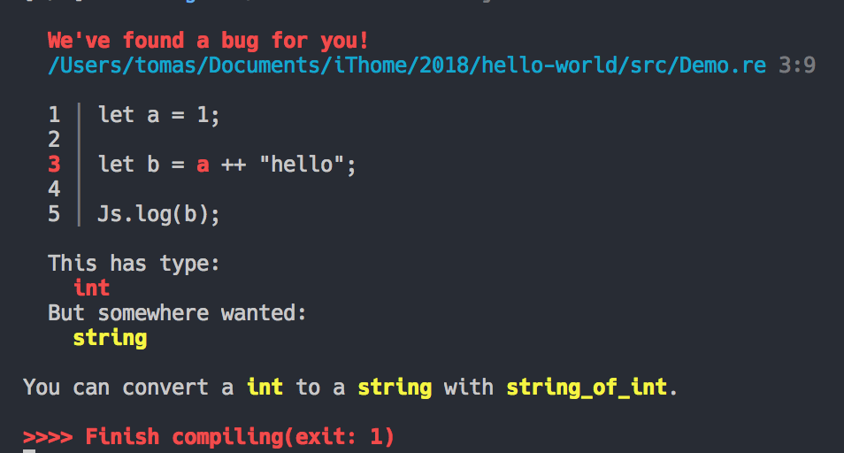

Basic Type
在每個程式語言中都會有一些基本的型態
Reason 屬於強型態的程式語言
這裡介紹的基本型態的變數型態有
- Boolean
- 數字
- 字串
- 字元
Type
Type 是 Reason 的亮點之一
let 不一定需要宣告 類型
1 | let score = 10; |
Reason 知道 score 是個 int 型別，透過其值 10 判斷出來。這個稱之為 推斷(inference)
變數宣告(Let binding)
在介紹變數型態之前要先介紹一下如何宣告變數
Reason 中只有使用 let 來宣告變數
1 | let a: string = "hello"; |
雖然在 Reason 中已經宣告，但是在編譯成功後依舊不會看到這個變數
因為當尚未使用到之前是不會產生在結果中
1 | let a: string = "hello"; |
但是當我們開始使用之後，編譯結果就會出現
Result:
1 | // Generated by BUCKLESCRIPT VERSION 4.0.5, PLEASE EDIT WITH CARE |
另外 Reason 是屬於 Block Scope
1 | if (displayGreeting) { |
也可以這樣處理
1 | let message = { |
這樣在外層會無法呼叫 part1, part2
而 message 會等於 part1 ++ " " ++ part2 的字串組合
編譯後的結果會是
1 | ; |
而且預設使用 let 宣告的變數都是 Immutable
1 | let a: string = "hello"; |
這邊會得到一個錯誤訊息
1 | >>>> Start compiling |
但是可以重複使用 let 宣告同一個變數
1 | let message = "hello"; |
Type system
雖然 Reason 是屬於強型態，但是也有留一些彈性
若你沒有宣告變數型態的時候，他會自動進行型態推導
1 | let a = "1"; |
但是如果使用數字的運算的話
1 | let a = 1; |
會得到了一個錯誤

訊息會相當清楚地告知是哪一個部分錯誤
對於 debug 會相當有利
Boolean
布林值在各個程式語言中佔有相當重要的基本判斷依據
而且在 Javascript 中也是一項令人相當頭痛的變數型態
常常會有很多不小心造成了很多 bug
1 | let testNum = 1; |
有趣的是編譯結果會是
1 | // Generated by BUCKLESCRIPT VERSION 4.0.5, PLEASE EDIT WITH CARE |
他並未依據我的順序來做編譯
而是做了一些優化
因為 isZero 比較的是一個常數
所以不論怎樣執行，最後的結果一定是 false
所以他優先宣告了 var isZero = false;
然後在宣告 testNum
基本的布林運算子
- && - and
- || - or
- ! - not
- <=, >=, <, >
- == - structural equal
- === - referential equal
- != - structural not equal
- !== - referential equal
運算子中比較有趣的是 == 和 ===
1 | let tuple1 = (1, 2, 3); |
== 是比較結構是否相等=== 是比較來源是否相同
數字
1 | let zero: int = 0; |
- int - 整數
- float - 浮點數
數字的相加
1 | let addResult = 1 + 1; |
Float 的相加要使用另外一個符號 +.
1 | let addResult = 1 + 1; |
int 與 float 的比大小
因為 Reason 是強型別的語言
1 | let twoBiggerThanOne = 2 > 1; |
int 和 float 是不同的型別
無法直接地做比較
所以要先使用 float_of_int 將 int 轉成 float
1 | float_of_int(2) > 1.2; /* true */ |
string
" 使用雙引號宣告的為字串
' 使用單引號宣告的為字元
字元只能有一個字母
1 | let name: string = "Tomas"; |
在編譯的時候要注意的是如果是中文的話預設是 Unicode
在宣告的時候要先進行處理
而使用 j 除了處理 Unicode 也可以用變數 (類似 ES6 Template)1
2
3
4
5
6
7
8
9let name: string = "Tomas";
let yourName: string = {js|哈囉世界!|js};
let world = {js|世界|js};
let helloWorld = {j|你好，$world|j};
let a: char = 'a';
Js.log(name);
Js.log(a);
Js.log(yourName); /* 哈囉世界! */
BuckleScript 編譯前會先尋找 js 和 j 進行處理
另外字串的相加使用 ++
1 | let hello = "Hello"; |
也可此參考 Reason 的 string API文件